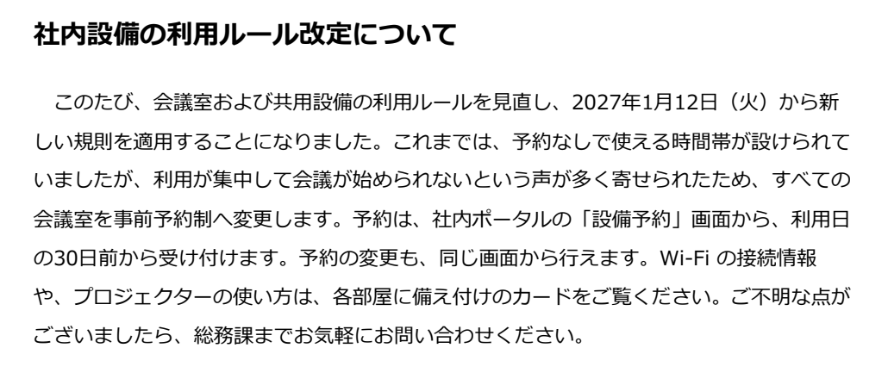
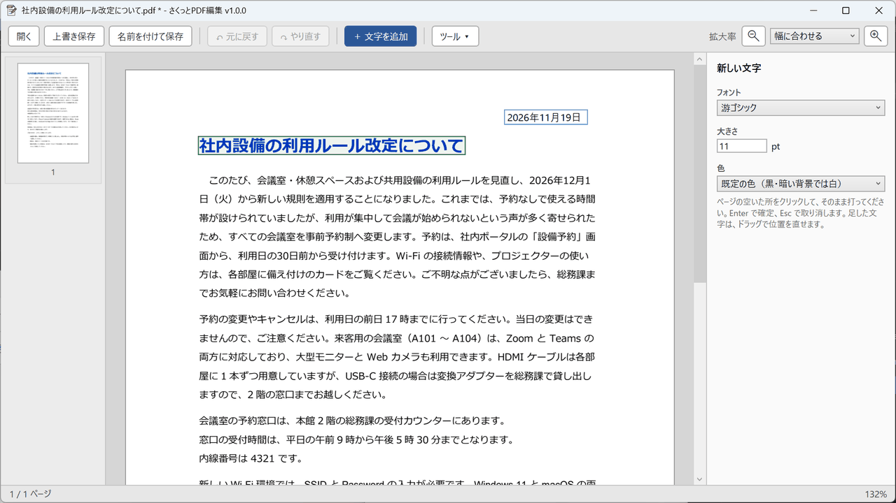
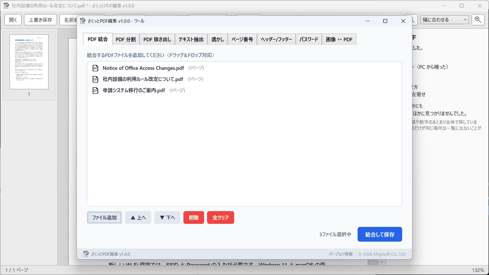

v1.0.0
最初の版（文字の書き換え・追加・移動・削除・書式の変更・段落の折り返しと、9 つの PDF の道具）。
Windows 用の PDF 文字編集ソフト1.0.0（2026年11月）
さくっとPDF編集は、PDF の中の文字をクリックして打ち直せる Windows 用のアプリです。誤字の修正、日付や名前の書き換え、文字の追加・移動、段落の折り返しに対応しています。すべての機能がオフラインで動作し、PDF を外部に送信することはありません。
¥2,980買い切り
Microsoft Store で入手Microsoft Store で購入して、すぐに使えます。アプリのアカウント登録はいりません。最新の価格は Microsoft Store の表示をご覧ください。
直す前元の PDF。赤字は、直す所を示すためにこのページで重ねた印です（日付を「2027年1月12日」に、5 行目に一文を足す）

直した後さくっとPDF編集 1.0.0 で直して保存した PDF。赤の下線は、変わった所に重ねた印です


「開く」ボタンで選ぶか、窓に PDF をドラッグ＆ドロップします。左にページの一覧、真ん中にページ、右に選んだ文字の欄が出ます。

直したい文字をクリックして選び、もう一度クリックすると、その場に入力欄が開きます。打ち直して Enter で確定、Esc で取り消しです。表の右寄せの数字は、右端をそろえたまま書き換わります。

保存の前に、直し忘れも確かめられます。書き換えた元の値（電話番号・日付など）がほかのページに残っていれば、右の欄にその場所が出ます。最初の保存では必ず保存先を聞きます。初めは元の名前に「_編集済み」を付けた名前が入っているので、元のファイルはそのまま残ります。
PDF を作ったときのファイルが手元に無くても、PDF のまま直せます。
自分で作った書類の誤字の修正、毎年使うひな形の日付・年度・名前の更新、案内文への一文の追加、記入欄のない申込書への書き込みに向いています。
文字をクリックして、その場で打ち直します。
できるだけ元のフォントで書き、元のフォントで書けない字は PC の同じフォントか同梱のフォントで書いて、そのことを表示します。表の右寄せの数字は、右端をそろえたまま。はみ出したときは「幅に合わせて縮める」で収められます。
何行かにわたる段落を、1 つの入力欄で直します。
足した言葉は次の行へ送られ、削ると次の行から上がってきます。直した所より前の行は動かしません。横書き・左寄せ（両端そろえを含む）・1 つの書式の段落が対象です。
ページの好きな場所に文字を書き込みます。
記入欄のない申込書に、名前や日付を。初めは游ゴシック・11 pt で、「設定…」で変えられます。足した後も、書式と位置を直せます。
元からある文字も、足した文字も動かせます。
ドラッグ、または矢印キー（0.5 pt ずつ、Shift で 5 pt）。近くの文字の行や端にそろえる線と吸い付きが出ます。表のセルの文字も、字が欠けずに動きます。
元からある文字の書式も変えられます。
フォントは、元のフォント、同梱のゴシック・明朝・欧文、PC のフォントから。大きさは 4〜96 pt、色は今の色・黒・赤・青です。
選んだ文字のまとまりを、Delete キーで消せます。
元に戻す（Ctrl+Z）・やり直す（Ctrl+Y）は、1 回の操作を 1 回で戻します。

元からある題名を青・18 pt に変えた後、「＋ 文字を追加」で右上に日付を打っているところです。右の欄は、足す文字のフォント・大きさ・色です。
「ツール」から開きます。ページをまとめる・分ける・整える作業に。

9 つのタブで道具を切り替えます。PDF 結合のタブで、架空の案内文 3 つを一覧に入れたところです。
くわしくは プライバシーポリシー をご覧ください。
ご購入の前に、できること・できないことをご確認ください。
| 開けるファイル | PDF。開くときにパスワードが要る PDF も、パスワードを入れて開けます。 |
|---|---|
| 編集できる文字 | 文字の情報を持つ PDF の、横書きの文字（パソコンのソフトで作った PDF など）。編集が制限された PDF は、編集パスワード（権限パスワード）を入れると編集できます。 |
| 編集できないもの |
|
| 書式 | フォント: 元のフォント・同梱のゴシック（Noto Sans JP）・明朝（Noto Serif JP）・欧文（Liberation Sans）・PC のフォント（PDF への埋め込みが許されたもの） 大きさ: 4〜96 pt ／ 色: 今の色・黒・赤・青太字・斜体の切り替えはありません。複数のまとまりをまとめて選ぶ・動かすことはできません。 |
| 段落の折り返し | 横書きで、左寄せ（両端そろえを含む）、1 つの書式で書かれた段落が対象です。書き直した行は左寄せになります。段落の下にある表や図は動かさないので、下に空きが無いと行を増やせません（理由を表示します）。折り返せない段落も、1 行ずつなら書き換えられます。 |
| 計算 | 表の数字を変えても、合計などは自動で計算し直しません。 |
| 保存 | 上書き保存（Ctrl+S）・名前を付けて保存（Ctrl+Shift+S）。最初の保存は必ず保存先を聞きます（初めは「_編集済み」を付けた名前）。パスワードのかかった PDF は、元のパスワードのまま、またはパスワードを外して保存できます。「元の言葉がほかに残っている場所」は、書き換えた語や数字のまとまりごとに探します。その一部だけが同じ場所は、一覧に出ないことがあります。 |
| 9 つの道具 | 結合・分割・ページの抜き出し・テキスト抽出・透かし・ページ番号・ヘッダー/フッター・パスワード・画像 ↔ PDFPDF → 画像: PNG・JPEG（72・150・300 dpi）／ 画像 → PDF: PNG・JPEG・BMP・GIF・TIFF |
| 表示言語 | 日本語・英語（Windows の言語設定に合わせて切り替わります） |
| 動作環境 | Windows 10（バージョン 2004）以降・64 ビット |
| 価格 | ¥2,980（買い切り・Microsoft Store） |
最初の版（文字の書き換え・追加・移動・削除・書式の変更・段落の折り返しと、9 つの PDF の道具）。
Microsoft Store 版は自動で最新版に更新されます。
最新の価格は Microsoft Store の表示をご覧ください。